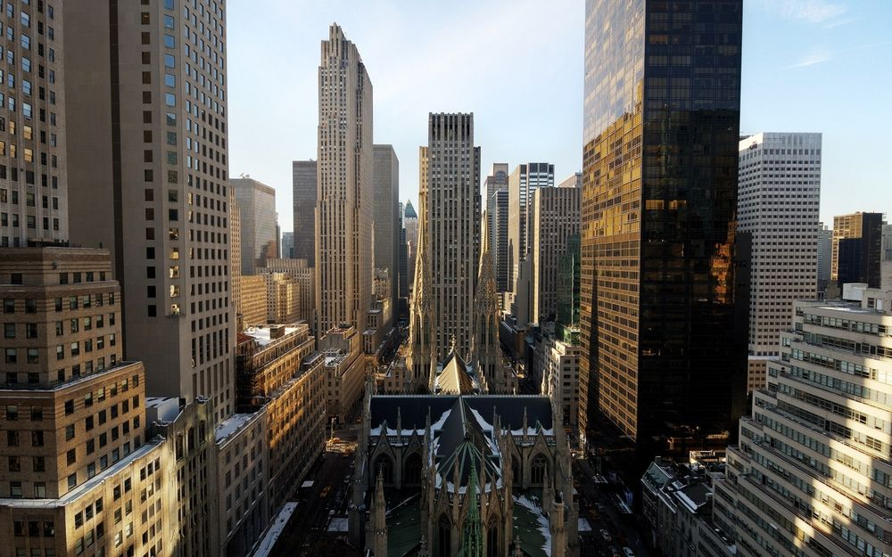
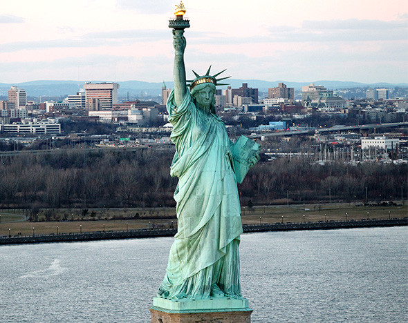
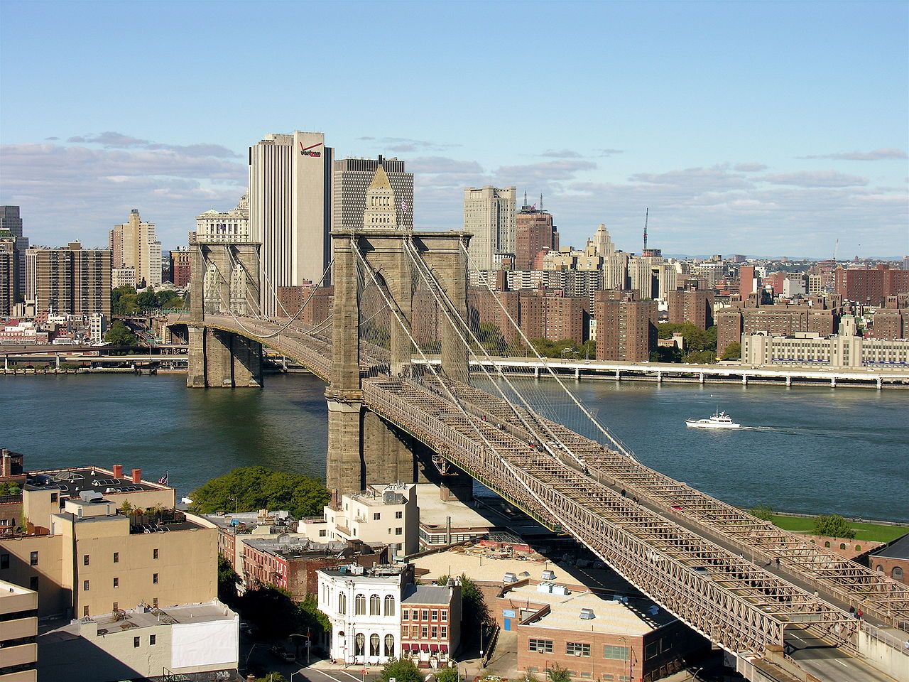

Нью-Йорк, город мечты



Нью-Йорк - это город, который никогда не спит. С первых минут он захватывает своей энергией, разнообразием и масштабом. Небоскребы Манхэттена устремляются в небо, создавая невероятный городской пейзаж.
Прогулка по Центральному парку - это оазис спокойствия посреди бетонных джунглей. Осенние краски деревьев, уличные музыканты и белки, выпрашивающие орешки у прохожих.
Статуя Свободы - символ надежды и свободы. Паром к острову Либерти открывает потрясающий вид на Манхэттен с воды.
Бродвейские шоу, музеи мирового уровня, разнообразная кухня со всех уголков планеты - в Нью-Йорке действительно можно найти все, что душе угодно.
Рекомендации для посещения
- Центральный парк - возьмите велосипед напрокат или просто гуляйте, не пропустите Bethesda Terrace.
- Статуя Свободы - бронируйте билеты заранее, особенно если хотите подняться на корону.
- Бруклинский мост - прогулка на закате с видом на Манхэттен незабываема!
- Таймс-Сквер - обязательно посетите вечером, когда загораются все огни.
- Музей Метрополитен - один из лучших музеев мира, выделите целый день.
- High Line - парк на высоте, созданный на старой железной дороге.
- Бродвей - купите билеты на шоу заранее или попробуйте lottery для дешевых билетов.